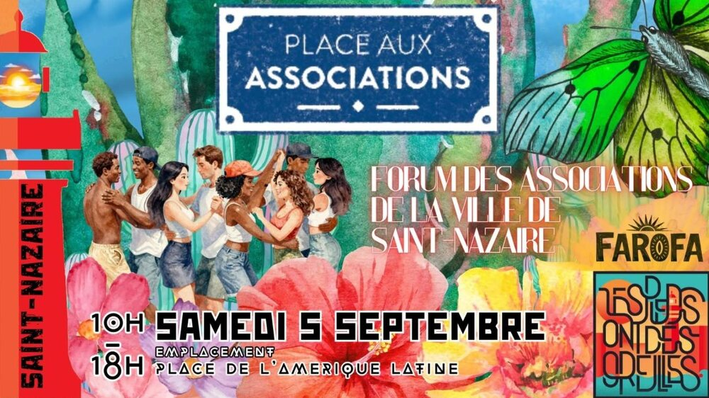

Place aux associations

Lieu : Place de l'Amérique Latine, Saint-Nazaire
Cette année on se retrouve au Forum des associations !
C'est le moment idéal pour venir nous rencontrer, papoter, poser toutes vos questions sur les cours, les bals, les concerts… et pourquoi pas vous inscrire pour la rentrée.
À 16h, rendez-vous sur la scène de l'Alvéole 12 pour un mini-bal forró !
On ne sera pas seul·es sur le stand : vous pourrez aussi rencontrer Farofa, toute nouvelle association nazairienne autour de la culture brésilienne.